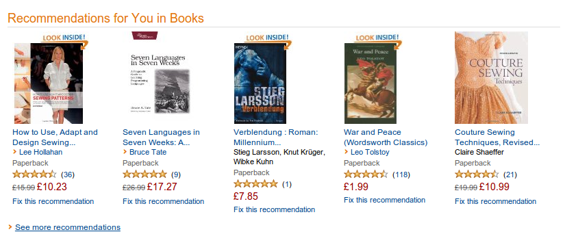

getting recommendations
out of nothing
about me
- muffin provider @10Clouds
- recommender system for
motointegrator.pl - master thesis on conversion rates
in e-commerce websites
WHAT TO EXPECT?
- recommendations - required theory
- collecting user input
- processing user preferences
- using recommendations
THEORY
What are recommendations?
Estimating ratings or preferences for items
that have not been seen by the user.
\begin{equation}
∀c\in C,\; s^{'}_{c} = \underset{s \in S}{arg\: max\: u(c, s)}
\end{equation}
EXAMPLES
AMAZON
NETFLIX

GOODREADS
SPOTIFY
RECOMMENDER SYSTEMS
-
Collaborative recommendations
-
Content-based recommendations
-
Hybrid methods
COLLABORATIVE RECOMMENDATIONS
The user is recommended items
that people with similar tastes
and preferences liked in the past.
COLLABORATIVE RECOMMENDATIONS
-
- + simpler to implement
-
+ good for small in-memory datasets
that change frequently - - slow for a large dataset
- - inaccurate for sparse data
- - inaccurate for new users
- - inaccurate for new items
CONTENT-BASED RECOMMENDATIONS
The user is recommended items
similar to the ones
the he has referred in the past.
CONTENT-BASED RECOMMENDATIONS
- + fast for any dataset
- + accurate for any dataset
-
- additional overhead for item
similarity storage - - more complicated to implement and test
- - limited by te features explicitly associated
with the items - - over-specialization
- - inaccurate for new users
HYBRID METHODS
- combining separate recommenders
- adding content-based characteristics
to user-based models - adding collaborative characteristics
to content-based models - developing a single unifying
recommendation model
USE CASE
motointegrator.pl
STARTING POINT
big set of items (>100k)
no review system
no review system
PostgreSQL, Redis, Solr, Django
↓
content-based recommendations
COLLECT
USER DATA
USER RATINGS
=
user actions
SCORE USER ACTIONS
BASIC
- 0 - didn't buy
- 1 - browsed
- 2 - bought
EXTENDED
- higher score for items reached via search
- add score for wish list
- distinguish added to cart and bought
STORE USER ACTIONS

USER ACTIONS STORE
Concept
{'popeye': (838091372, 1), (169595046, 2), (222083613, 1)}
{'amelie': (204548150, 2), (558149454, 1),...} # Add a new item_id to the user_key list
redis.lpush(user_key, item_id)# Cut out the oldest elements
redis.ltrim(user_key, 0, max_elements)
# Add the user_key to registry
redis.sadd(registry_key, user_key) Don't lose your data!
Track users that aren't logged in.
↓
Merge session keys
when the user logs in.
when the user logs in.
COLD START
CALCULATE
SIMILARITIES
FIND SIMILAR USERS
SIMILARITY SCORE
- Euclidean Distance
- Pearson Correlation
- Cosine Similarity
euclidean distance score
def sim_distance(user_data, p1, p2):
"""Return the distance-based similarity score for p1 and p2
The returned values should be between -1 and 1"""
if (p1 not in user_data or p2 not in user_data or
(user_data[p1] == 0.0 and user_data[p2] == 0.0)):
return 0
si = {}
for item in user_data[p1]:
if item in user_data[p2]:
si[item] = 1
# Find the number of elements
n = len(si)
# If they have no rating in common, return 0
if n == 0:
return 0
# Add up the squares of all the differences
squares_sum = sum([pow(user_data[p1][i]-user_data[p2][i], 2)
for i in si])
return 1 / (1 + sqrt(squares_sum))RANK THE USERS
Create a rank for each user in the dataset and get the
top ones
def get_top_matches(user, ratings, max_items):
"""Get the most similar matches for specified user."""
scores = [(sim(ratings, user, x), x)
for x in ratings if user != x]
scores = sorted(scores, reverse=True)
return scores[:max_items]
RECOMMENDATIONS
ALWAYS SUCK!
CREATE SIMILARITIES dataset
def calculate_similar_items(user_keys):
"""Calculate similar items and set them in their keys in redis"""
objs = {}
for user_key in user_keys:
# Get all the user ratings
scores = redis.lrange(user_key, start=0, end=-1)
for obj in scores:
objs.setdefault(obj, {})
objs[obj][user_key] = 1 # Or any specific weight
for obj in objs:
# Find the most similar items
scores = get_top_matches(obj, objs, 5)
if not scores:
continue
# Get the object key to be set in redis
obj_key = get_key('similar_prefix', obj)
# Set the scores in redis, and add the key to registry
scores_mapping = map(dict(x[1], x[0]) for x in scores)
redis.zadd(obj_key, **scores_mapping) # sorted set
redis.sadd('similar_registry', obj_key) # setRecommend!
USE CASES
- recommend items to users
- recommend items similar to
a specific item - find users that would likely
be interested in certain items
item recommendations
def get_items_recommendations(items, max_items=10):
""" Get recommendations for the provided items.
The returned value will be a list of tuples
[('AEC234', 0.89), ('123ASW': 0.86'),...] """
# Gather the keys for items, which hold the similrities
item_keys = [get_redis_key('similar_prefix', x) for x in items]
# Get the items recommendations sorted by score descending.
# We need a random key for redis
scores_key = get_redis_key('score', os.urandom(8))
# Get the common items, their scores will be added
# and the set will be sorted in redis
redis.zunionstore(scores_key, keys=item_keys)
rankings = redis.zrevrange(scores_key, start=0, num=-1,
withscores=True)
# Filter out current items
rankings = [x for x in rankings if x not in items]
# And return the rankings
return rankings[:max_items] USER RECOMMENDATIONS
get_user_recommendations(user_ratings, max_items=10):
"""Get the recommendations for user using his history """
# Get weighted scores, each key will be added to a new sorted set
# Each key from the items similarities set will be multiplied
# by the rating from the user_ratings set
weighted_score_key = get_redis_key(user_key, 'weighted_score',
os.urandom(8))
redis.zunionstore(weighted_score_key, keys=user_ratings)
weighted_scores = redis.zrevrange(weighted_score_key, start=0,
num=-1, withscores=True)
score_key = get_redis_key(user_key, 'score', os.urandom(8))
redis.zunionstore(score_key, keys=user_ratings.keys())
scores = redis.zrevrange(score_key, start=0, num=-1,
withscores=True)
scores = map(dict(key, value) for key, value in scores)
rankings = []
for item, score in weighted_scores:
rankings.append((item, score/scores[item]))
rankings = sorted(rankings, key=lambda x: x[1], reverse=True)
return rankings[:max_items] SQUEEZE THE ITEMS
- categories
- item - connections
- item - alternatives
- keywords
TEST
- stress tests
- effectiveness tests
(Mean Squared Error, Root Mean Squared Error) - conversion rate tests
Consclusion
- content-based recommendations
for big item-sets - Redis for fast storing
and painless calculations